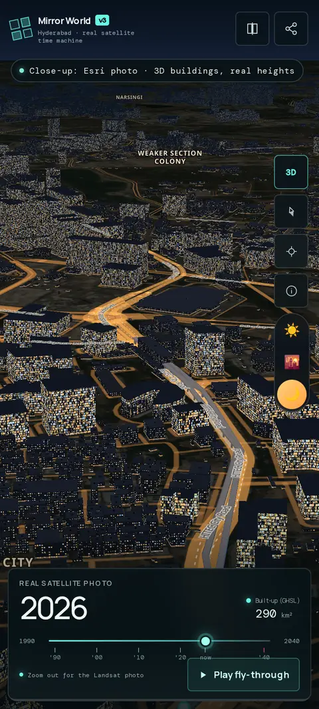
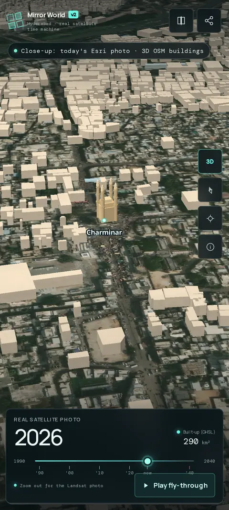
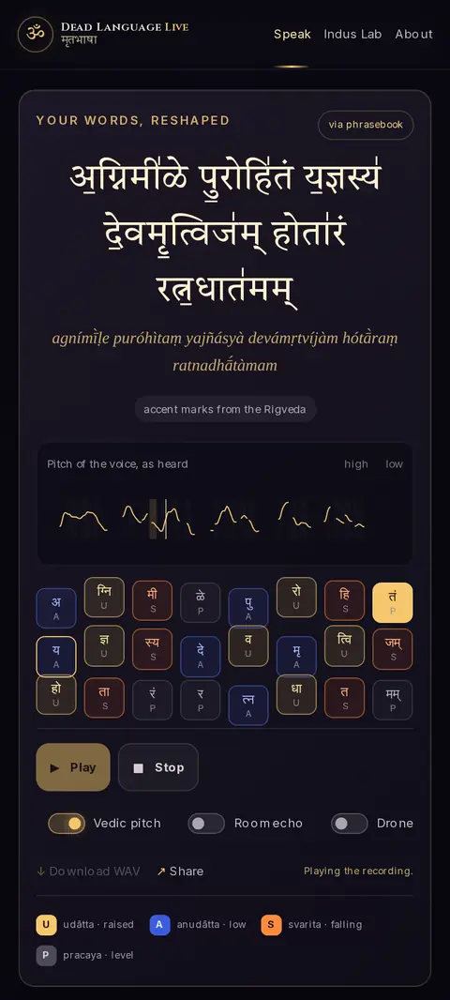
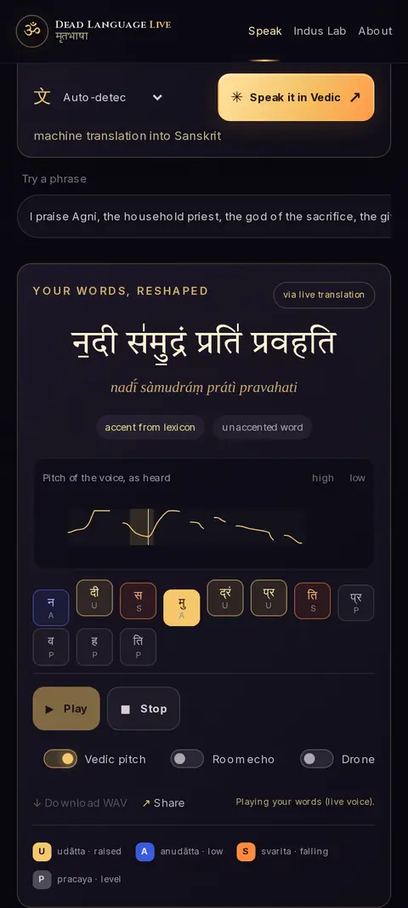
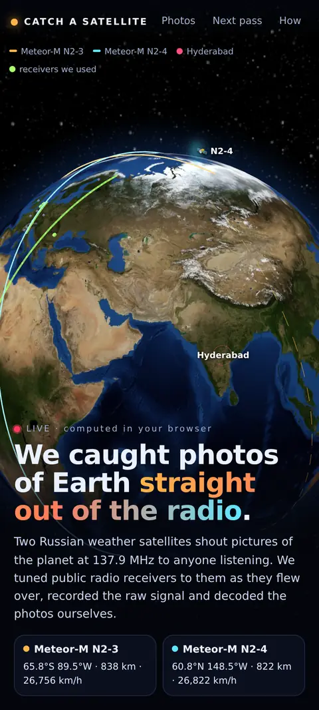
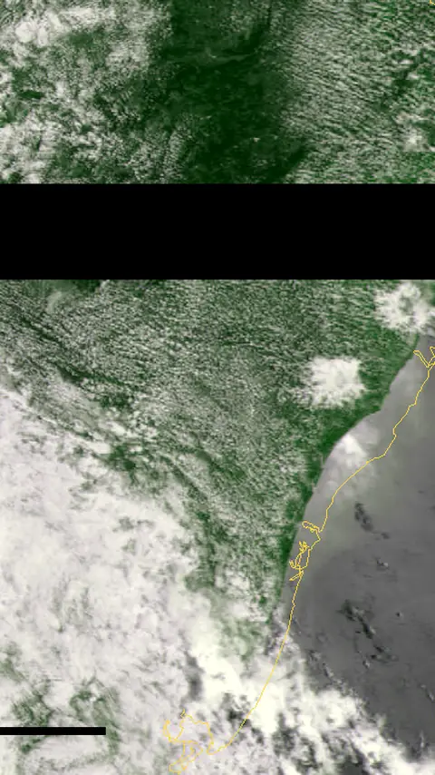
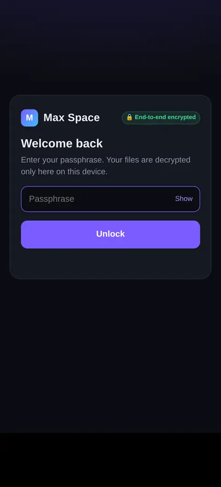
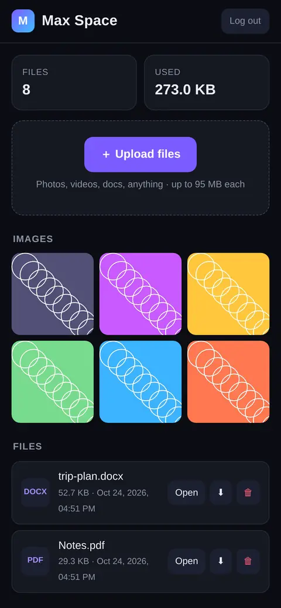

01
3D city · time slider
Mirror WorldHyderabad
Drag a whole city through time. Hyderabad in 3D, from 1990 to a 2040 forecast, in your hand.


Portfolio · Web worlds · 2026
I build worlds you can fall into.
Scroll to fall ↓
Impact
Index — four worlds
3D city · time slider
Drag a whole city through time. Hyderabad in 3D, from 1990 to a 2040 forecast, in your hand.


Voice · language · decipherment
Speak, and hear it back in Sanskrit. Plus a lab for the Indus script, still unread after 4,000 years.


Radio · weather satellites
Real photos of Earth, pulled out of weather-satellite radio and decoded line by line.


Privacy · encryption
A private cloud drive. Files are encrypted on your device; the server only ever holds noise.


Why
Ideas, design and direction by Mani. Built fast, with AI as the crew.
Contact